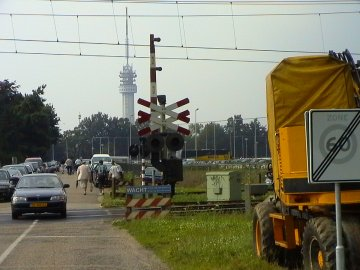
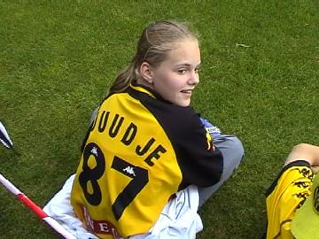

|
VVV - Roda JC (0-2) 13 juli 2002 |

In Remunj is get oet.
Na de 22-0 in Bleijerhei is het goed lachen, maar nu op naar
de match tegen VVV op het veld van de oudste (1900)
club van Limburg: RFC-Roermond.
VVV Venlo kreeg op het neutrale terrein van RFC
thuisvoordeel en mocht in geelzwart spelen. Dit wekte
bij veel toeschouwers verwarring op.
Anastasiou scoorde op aangeven van Christiano.
Zon en regen wisselden elkaar af.
Misschien de laatste actie-foto van Vrede.....

Mega Roda-fan uit Herten, Juudje 87.
De business-room van RFC mocht zich verheugen in
de aanwezigheid van o.a. Frans Nijssen, Stan Valckx
Maurice Graeff en Nol Hendriks.
© Koempels
Pleasure Dome